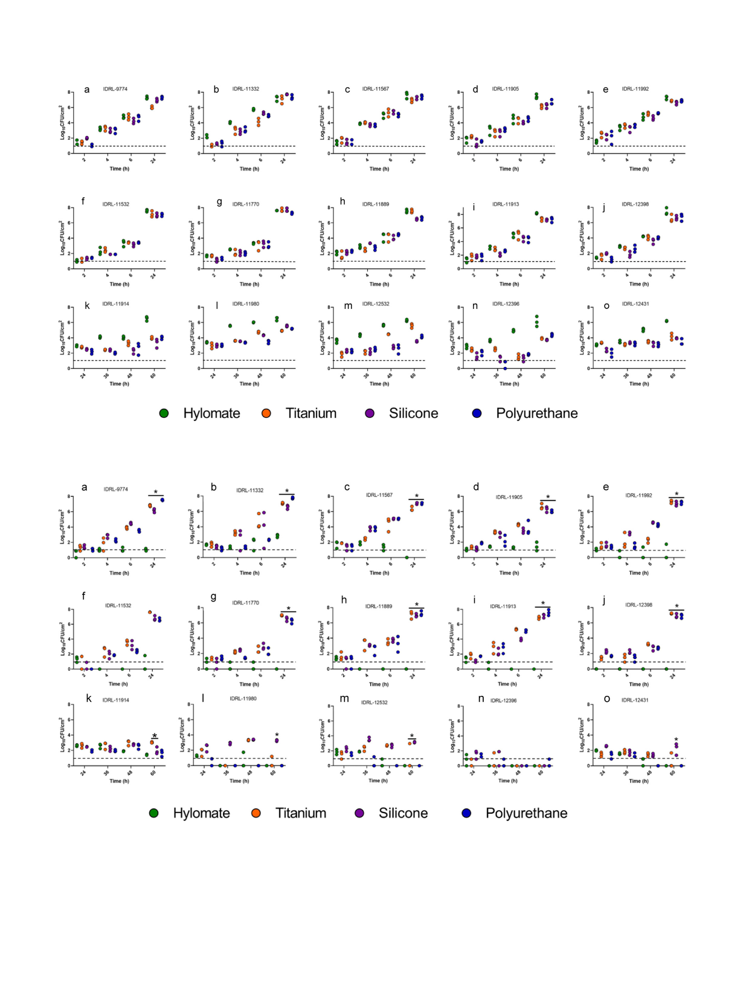

M. Albano, K.E. Greenwood-Quaintance, M.J. Karau et al.
IJC Heart & Vasculature 34 (2021) 100801
Fig. 1. Quantitative pre-treated with vancomycin or bacitracin culture of Staphylococcus aureus (a, b, c, d, e), Staphylococcus epidermidis (f, g, h, i, j) and Cutibacterium acnes (k, l,
m, n, o) on non pre-treated (i.e., blank) HylomateÒ, titanium, silicone and polyurethane coupons (controls).
Fig. 2. Quantitative culture of Staphylococcus aureus (a, b, c, d, e), Staphylococcus epidermidis (f, g, h, i, j) and Cutibacterium acnes (k, l, m, n, o) on HylomateÒ, titanium, silicone
and polyurethane coupons pre-treated with vancomycin (400 mg/ml). *Represents significant difference (p < 0.05) between Hylomate and other materials after 24 h or 60 h
incubation for staphylococci and C. acnes respectively.
and do not imply in vivo activity, such as with CIED implant
surgery.
Several studies have been carried out to test the activity and
cost effectiveness of antibacterial envelopes in various patient
groups undergoing de novo CIED implantation, revisions, or
upgrades. The most comprehensive CIED clinical trial was the
Worldwide Randomized Antibiotic Envelope Infection Prevention
Trial (WRAP-IT), which evaluated the antibacterial envelope
3